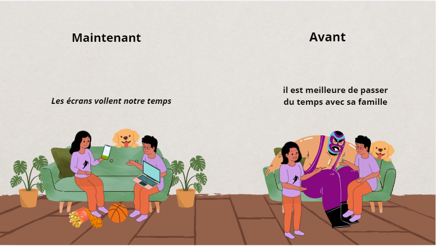
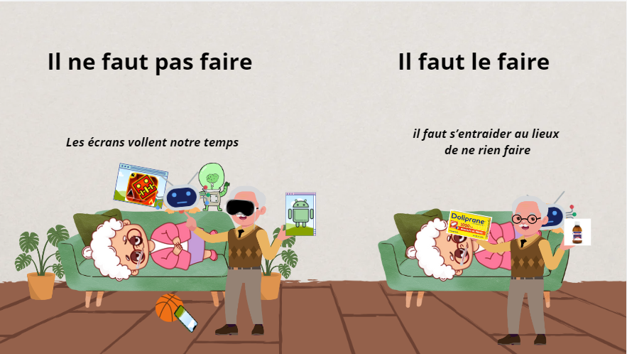
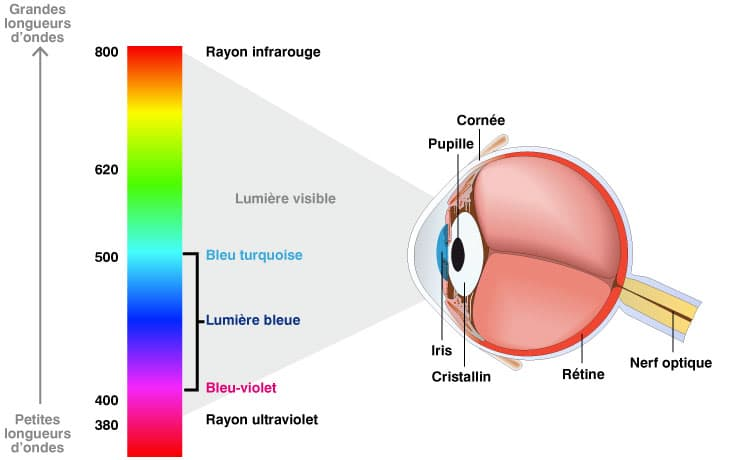

Pendant le confinement, vous étiez scotché à votre smartphone nuit et jour, pour télétravailler, vous tenir au courant des dernières informations ou simplement combler l'ennui ? Pas de panique, vous n'étiez pas le seul. Le temps que les Français ont passé sur leur téléphone en avril 2020 a bondi de 47% par rapport à avril 2019. À une époque où notre premier réflexe est de scroller machinalement sur les réseaux sociaux pour s'occuper les mains et l'esprit, le confinement ne pouvait qu'amplifier cette addiction moderne.
Mais aujourd'hui, le confinement est (on l'espère) derrière nous, et vous avez du mal à perdre cette mauvaise habitude. Pourtant, réduire son temps d'écran présente de nombreux avantages : cela permet de diminuer le stress, la sensation de fatigue, et même parfois les migraines. Et en bonus, qui dit moins de temps sur son smartphone dit plus de temps libre pour faire autre chose. Afin de réussir à diminuer votre temps d'écran, vous pouvez suivre ces quelques conseils simples et efficaces. Promis, pas besoin de partir en cure de désintoxication numérique hors de prix ni de brûler votre smartphone.
Exemple 1 : Le temps de qualité passé en famille a des répercussions bénéfiques : bien-être, sentiment d’appartenance, et influence positive sur le développement cognitif.
Exemple 2 : Le temps passé sur les écrans est très souvent statique, cela réduit donc la durée d'activité physique pratiquée au quotidien au lieu de ne rien faire.
Message pour prévenir que les écrans ne sont pas très bons pour la santé et prennent trop de temps dans notre vie.
Voici la répercussion que peuvent avoir les écrans sur notre corps : passer trop de temps sur les écrans peut diminuer votre vision et empêcher de dormir.
Adèm Belfekih
CM2-G